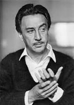

Romenas Gari
 1914 m. gegužės 8 d. Vilniaus mieste Leibos ir Minos Kacew šeimoje gimė sūnus Romain. Deja, Romeno tėvų santuoka buvo nesėkminga, tad berniukas augo atskirai nuo tėvo. Jiedu su motina buvo apsistoję Pohulankos g. 16 (Jono Basanavičiaus g. 18), tuo tarpu tėvas jau su kita moterimi sukūrė šeimą. Nors jo tėvas buvo pasiturintis pirklys, tačiau Romenui ir jo motinai finansiškai beveik nepadėjo, tad pati motina stengėsi verslauti kaip įmanydama – turėjo madų saloną, modeliavo moteriškas skrybėles, buvo pirklė, turėjo moteriškų drabužių parduotuvę „Maison Nouvelle“. Ieškodama geresnio gyvenimo sau ir savo sūnui, 1925 metais su sūnumi išvyko į Varšuvą, dar po trejų metų atsidūrė Prancūzijoje. Būdamas 21-erių savo Kacevo pavardę pakeitė į slapyvardį Gari. XX a. 4 deš. Romain, jau gavęs Prancūzijos pilietybę, studijavo teisę, mokėsi karinio parengimo mokykloje bei karo lakūnų mokykloje, o tam, kad turėtų už ką pavalgyti, dirbo įvairiausius darbus – padavėju, statistu kine, piešėju žaislų fabrike. Antrojo Pasaulinio karo metais Romenas Gari dalyvavo oro antskrydžiuose ir už narsą po karo buvo apdovanotas Garbės legiono ordinu, ir tai savo ruožtu turėjo įtakos po karo prasidėjusiai sėkmingai jo, kaip diplomato, karjerai. Tik 1962 m. Romenas atsisakė visų kitų savo veiklų ir pasirinko rašytojo kelią, parašė dešimtis kūrinių, jo vardas įrašytas į iškiliausių XX a. prancūzų rašytojų panteoną. Romenas Gari su aktore Jean Seberg sukūrė šeimą, susilaukė dviejų vaikų – Alexandre Diego ir Ninos Hart. Tik jų gyvenimo pabaigoje paaiškėjo, kad abu menininkus lydėjusi sėkmė neapsaugojo nuo sunkių gyvenimiškų pergyvenimų – 1979 m. nusižudė Jean, o po metų nusišaudamas pasaulį paliko ir Romenas
Kūryba
Romanai: „Europietiškas auklėjimas“, kuriame aprašoma lenkų kova su nacizmu, „Dienos spalvos“, „Dangaus šaknys“, kuriuose išaukštinami humanistiniai idealai, „Aušros pažadas“, autobiografinis romanas, kuriame pasakojama ir apie autoriaus gyvenimą Vilniuje, „Toliau jūsų bilietas nebegalioja“, „Pseudo“, „Moters šviesa“, „Aitvarai“, autobiografinis romanas „Émile’io Ajaro gyvenimas ir mirtis“. Émile’io Ajaro slapyvardžiu išleido romanus „Storulis-meilutis“, „Gyvenimas dar prieš akis“, „Karaliaus Saliamono nerimas“. Pagal savo scenarijus sukūrė filmus „Paukščiai mirs Peru“ (1968), „Žudyti“ (1972). Anksčiau minėtas slapyvardis Émile Ajar yra tik vienas iš daugelio Romeno Gari slapyvardžių. Ši slapyvardžių gausa pasitarnavo Romenui iškrečiant didžiausią XX a. Europos literatūros pokštą – du kartus nugvelbiant Gonkūrų premiją. Pirmąjį kartą Romenas Gari laimėjo Gonkūrų premiją už romaną „Dangaus šaknys“ 1956 m. Susigalvojęs Émile Ajar slapyvardį su kūriniu „Gyvenimas priešais mus“ jis dar sykį pateikė savo kūrinį Prancūzijos literatų teismui- – taip išgalvotasis Émile Ajar 1975 m. laimėjo Gonkūrų premiją. Įdomu, kad Romenas Gari to iš karto nepaskelbė, o tiesa išlindo viešumon tik po jo mirties.
Atminimo įamžinimas
Nuo 2007 m. J. Basanavičiaus ir Mindaugo gatvių sankryžoje, prie „Lietuvos geležinkelių“ pastato, stovi neįprasta skulptūra – galvą užvertęs berniukas su kaliošu rankose. Šios skulptūros idėja kilo aktoriui Romualdui Ramanauskui, ją įgyvendino skulptorius Romualdas Kvintas. Kūrinys vaizduoja pirmosios meilės epizodą iš Romeno Gari romano „Aušros pažadas“, kuriame rašoma apie vaikystę Vilniuje ir susižavėjimą mergaite Valentina. Kovodamas dėl jos dėmesio rašytojas pjaustė ir valgė guminį batą. Pats rašytojas yra pasakojęs, jog jam žaidžiant kieme motina kartais liepdavusi prieiti prie lango ir pakelti į ją akis, kad ši galėtų jomis pasigrožėti. Pagal Romeno Gari autobiografinį romaną „Aušros pažadas“ 2017 metais buvo pastatytas režisieriaus Éric Barbier filmas „Aušros pažadas“. Romeno Gari kūrybos galima pasiklausyti LRT mediatekoje, laidoje „Vakaras su knyga“.
Galerija